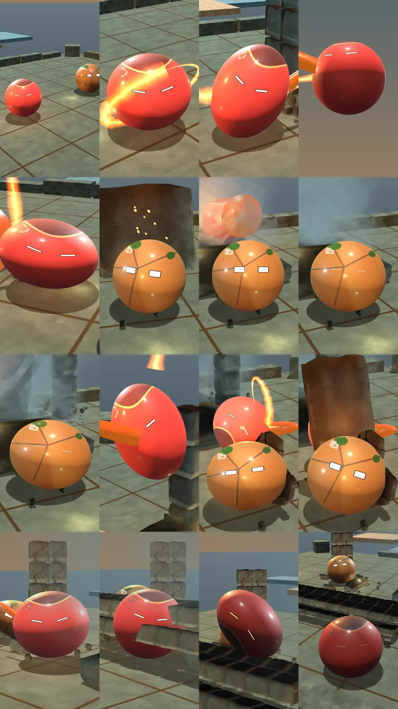

Framing the moment of contact
The latest reference-fight camera brings more of the action into view. In the recorded revision, 466 of 600 frames meet the current fighter-size and framing target, up from 332. The target is 480, and all three major impacts now keep the fighter shells inside their safety margin.
The impact images reveal a separate problem. Stone and fighter shapes merge at the moment of contact, making the action difficult to read. Clear bounds help, but the audience also needs to recognise the attacker, defender and power in a single glance.
Each capture gets both geometric checks and a visual review of the overview and consecutive action frames. This revision keeps its stronger camera views while the next work focuses on contact silhouettes, distinct element shapes and brighter colour in the shadows.
The first milestone remains in progress. No reference film has passed the full visual bar yet, so the gallery stays reserved for approved work.
Inside the work

